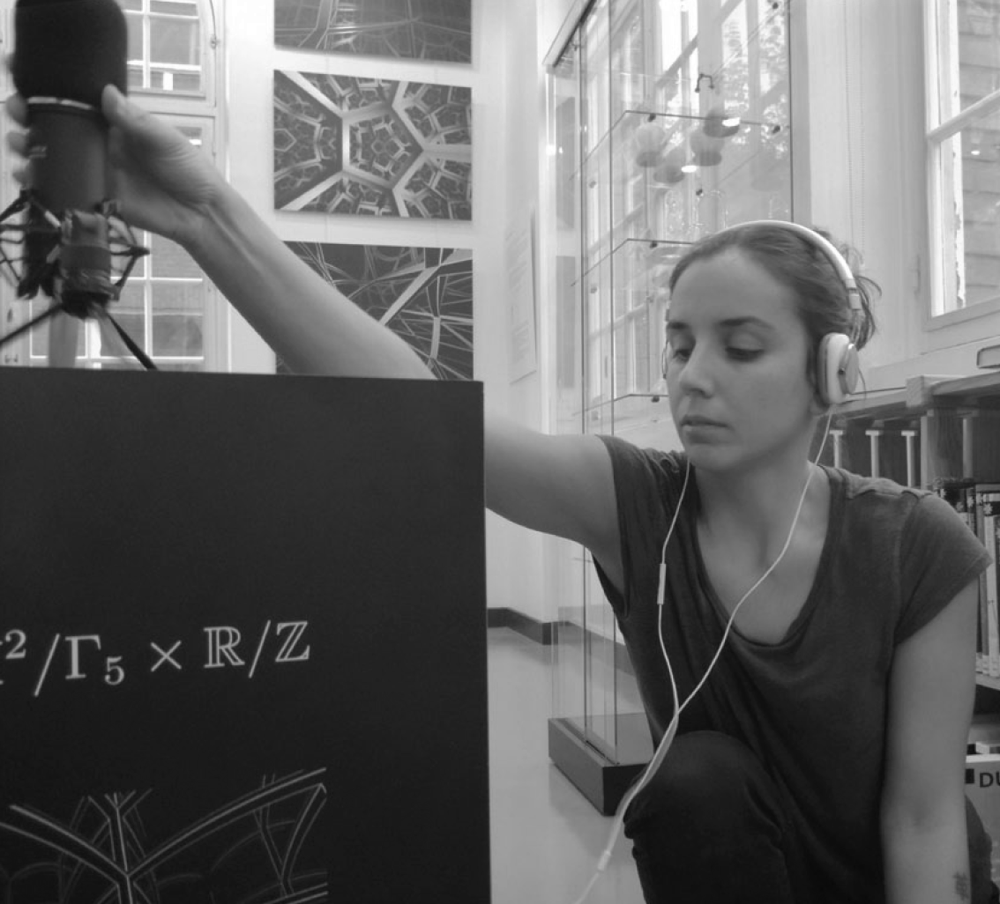

<div class='container'>
    <div id='bio_contact'>
        <div class="row">
            <div class="col-8">
                <div class="content-container">
                    <p><i>Chilena, nacida en Santiago de Chile</i></p>
                    <p><i>Reside y trabaja en París, Francia</i></p>   
                    <p>&#106;&#105;&#109;&#101;&#110;&#97;&#64;&#109;&#101;&#108;&#105;&#120;&#46;&#110;&#101;&#116;</p>                    
                     <!--<a href="https://drive.google.com/drive/folders/1rScl-L89lXcJEFqvfiNyADXV1XpftS86" target="blank">CV</a>-->
                </div>
                </br>
                </br>
                <div class="content-container">
                    <p> Artista e investigadora chilena, Jimena llega a Francia en 2009 para cursar sus estudio de ingeniería en la École Polytechnique y realizar luego un doctorado en Física Matemática. Igualmente diplomada del Instituto de Investigación y Coordinación Acústica/Música (IRCAM), Jimena comparte su tiempo entre investigación en informática aplicada a la música y proyectos artísticos que integran sonido, matemáticas y temas socio-politicos. Entre 2015 y 2019, Jimena trabaja en investigación y desarrollo para la industria de streaming musical. En 2016 crea el colectivo Iakeri junto a la compositora Alice Guerlot-Kourouklis. En 2019 el colectivo Iakeri realiza la instalación sonora y visual Muros Invisibles, obra que ha sido presentada en diferentes exposiciones y festivales en Francia, Canadá, Colombia y Chile. En 2016 junto a Pierre Berger y Sergio Krakowski crea la instalación sonora interactiva Conversaciones, presentada por primera vez en el 7° Congreso de Europeo de Matemáticas en Berlín, y que hoy es parte de la colección permanente de Universum, el Museo de las Ciencias de la Universidad Nacional Autónoma de México (UNAM). A partir de 2017, junto a Pierre Berger y Vincent Martial, realiza varias instalaciones sonoras y plásticas para el grupo de investigación en arte y ciencia Esthétopies, que trabaja sobre la exploración sensible de espacios matemáticos abstractos.</p>
                </div>
                </br>
                </br>
                <div class="content-container">
                    <h3>Residencias de investigación y creación artística</h3>
                    <ul>
                        <li> [A VENIR] <a href="https://www.tsonami.cl/2020/07/programa-de-residencias-resonancias-en-b-a-s-e-tsonami" target="black">B.A.S.E. Tsonami - Valparaíso</a>, Chile Marzo 2021 junto a <a href="http://jasminescu.com/" target="black"> Jasmina Al-Qaisi </a> y la colectiva <a href="http://pajarxentrepuas.cl" target="black"> Pajarx Entre Púas </a>
                            <br>
                            <a href="https://www.goethe.de/ins/cl/es/kul/aus/21781491.html" target="black">
                            Programa de residencias artísticas RESONANCIAS</a> Goethe-Institut Chile e Institut Français du Chili</li>
                        <li><a href="https://www.stereolux.org/" target="black">Stereolux - Nantes, Francia 2019</a></li>
                        <li><a href="https://www.cirm-math.fr/" target="black">Centre International de Rencontres Mathématiques CIRM - Marseille, Francia 2019</a></li>
                        <li><a href="https://easternbloc.ca/en" target="black">Eastern Bloc - Montreal,  Canada 2019</a></li>
                        <li><a href="https://www.math.univ-paris13.fr/laga/index.php" target="black">LAGA - Université Sorbonne Paris Nord - Villetaneuse, Francia 2018</a></li>
                        <li><a href="https://chateauephemere.org/" target="black">Château Éphémère - Carrières-sous-Poissy, Francia  2018  y 2019</a></li>
                    </ul>
                    <br>
                    <h3>Exposiciones museales</h3>
                    <ul>
                        <li>
                            <a href="http://www.universum.unam.mx/exposiciones/imaginario-matematico" target="black">Imaginario matemático, Universum, Museo de ciencias UNAM, Ciudad de México, México</a>
                        </li>
                    </ul>
                    <br>
                    <h3>Exposiciones colectivas</h3>
                    <ul>
                        <li>
                            <a href="https://www.valdoise.fr/2020-exposition-en-cours.htm" target="black">
                                16 Noviembre 2019 – 29 Marzo 2020,
                                <i>Proliturgia, ordinatrices du temps présent<i>
                                Abbaye de Maubuisson, Saint Ouen l’Aumône, Francia
                            </a>
                        </li>                                
                        <li>
                             <a href="https://easternbloc.ca/en/exhibits-events/exhibits/invisible_walls" target="black">
                                20 - 28 Agosto 2019,
                                Galeria Eastern Bloc,
                                Montreal, Canada
                             </a>
                        </li>                        
                        <li> 
                            <a href="http://voltaje.co/ediciones-anteriores/6-2019/" target="black">
                                20 - 22 Septiembre 2019
                                Voltaje – Salón de arte y tecnología 6° edición, La Feria del Millón,
                                Bogota, Colombia</a>
                        </li>                           
                        <li> 
                            <a href="http://scienceouverte.fr/Exposition-Esthetopies-Varietes-d-espaces-sensibles" target="black">19 Enero - 10 Marzo 2019 Esthétopies : Variétés d'espaces sensibles, Château de Ladoucette, Drancy, Francia</a>
                        <li> 
                            </p><a href=" http://nanterredigital.fr/festival" target="black">6 - 22 Diciembre 2017 Festival Nanterre Digital, L’Agora de Nanterre,  Nanterre, Francia</a>
                        </li>                           
                        <li>
                            <a href="http://esthetopies.ihp.fr" target="black" target="black">8 Marzo - 8 Julio 2017 Esthétopies – Variétés d’espaces, Instituto Henri Poincaré, Paris - Francia</a>
                        </li>                           
                        <li>
                            <a href="https://inclusivesoundspaces.wordpress.com/installations" target="black">1ero - 2do Julio 2017  Activating Inclusive Sound Spaces, University of Huddersfield - Inglaterra</a>
                        </li>                           
                        <li>
                            <a href="http://womeninmath.ny/venue/bonn-germany" target="black">10 Noviembre 2016 Proyección vernissage exposición Women Of Mathematics, Bonn - Alemania</a>
                        </li>                                
                        <li>
                            </p><a href="http://www.7ecm.de/program/cultural_program.html" target="black"> 18 - 22 Julio 2016 7° Congreso Europeo de Matemáticas, Berlin - Alemania</a>
                        </li>                           
                    </ul>
                    <br>
                </div>
            </div>
            <div class="col-4">
                <div class="content-container">
                    
                    <p style="font-size:11px;" align="center"><a href="https://www.math.univ-paris13.fr/~berger" target="blank"> Foto: Pierre Berger</a></p>
                </div>
            </div>
        </div>
    </div>
</div>
